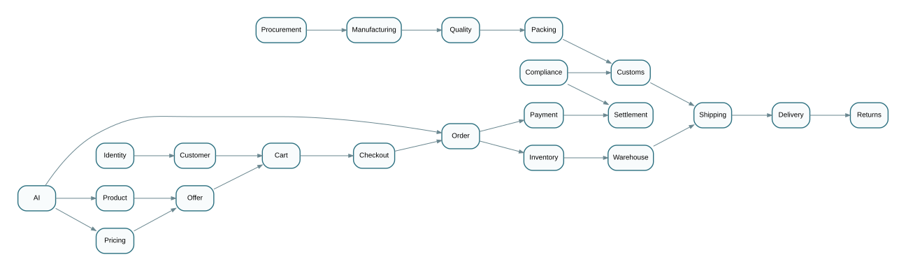
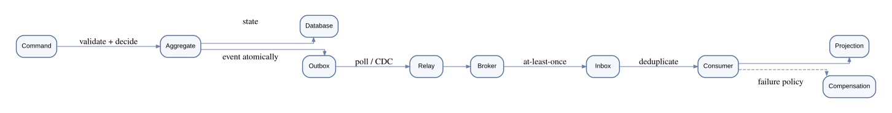

Architecture Overview
 Normative high-level architecture view — system planes and foundational truth distinctions.
Normative high-level architecture view — system planes and foundational truth distinctions.
Domain Map

Complete domain ownership map across commerce, trade, fulfilment, and supporting domains.
Global Lifecycle
 End-to-end global trade lifecycle — 27 canonical stages from onboarding through settlement.
End-to-end global trade lifecycle — 27 canonical stages from onboarding through settlement.
Event Reliability

Event-driven architecture reliability patterns — idempotency, ordering, and delivery guarantees.
Implementation Roadmap
 Seven-phase implementation roadmap with governed dependency ordering.
Seven-phase implementation roadmap with governed dependency ordering.
System Blueprint
 Five architectural planes: Business Domain, Experience, Integration, Intelligence, and Platform.
Five architectural planes: Business Domain, Experience, Integration, Intelligence, and Platform.
Security Zones
 Security zone model with trust boundaries, data classification, and access patterns.
Security zone model with trust boundaries, data classification, and access patterns.
Event & Workflow
 Event-driven workflow orchestration, saga patterns, compensation, and recovery flows.
Event-driven workflow orchestration, saga patterns, compensation, and recovery flows.
AI Control Plane
 AI-native architecture — RAG, agents, tool governance, evaluation, and supervised autonomy.
AI-native architecture — RAG, agents, tool governance, evaluation, and supervised autonomy.
Meta-Model
 GTOS meta-model: Reality → Entity → State → Event → Knowledge → Decision → Intent → Execution.
GTOS meta-model: Reality → Entity → State → Event → Knowledge → Decision → Intent → Execution.
Architecture Map
 Complete architecture map showing all system components and their relationships.
Complete architecture map showing all system components and their relationships.
Decision Chain
 Decision governance chain — authority, evidence, policy gates, and non-repudiation.
Decision governance chain — authority, evidence, policy gates, and non-repudiation.
Correction Flow
 Correction and reconciliation flow — detecting, documenting, and resolving contradictions.
Correction and reconciliation flow — detecting, documenting, and resolving contradictions.
Data Lineage
 Data lineage and provenance tracking across domain boundaries and event streams.
Data lineage and provenance tracking across domain boundaries and event streams.
Capability Map
 Business capability map — 11 core capabilities from Party & Identity through Audit & Evidence.
Business capability map — 11 core capabilities from Party & Identity through Audit & Evidence.
Agent Runtime
 AI agent runtime architecture — context assembly, planning, tool execution, and evaluation loops.
AI agent runtime architecture — context assembly, planning, tool execution, and evaluation loops.
Delivery Stage Gates
 Delivery stage gates — conformance gates from design through production deployment.
Delivery stage gates — conformance gates from design through production deployment.
Security Trust Model
 Security trust model — authentication, authorization, tenant isolation, and audit boundaries.
Security trust model — authentication, authorization, tenant isolation, and audit boundaries.